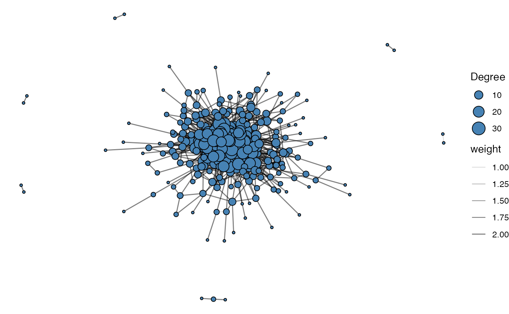
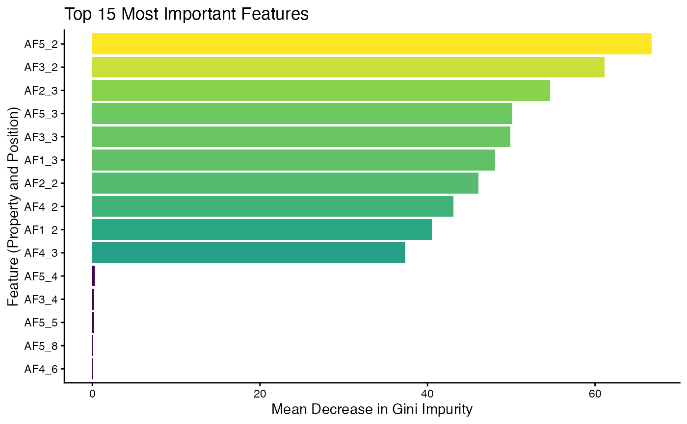
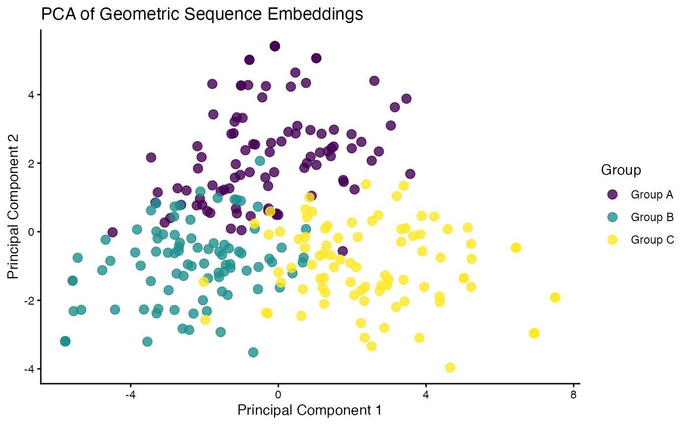
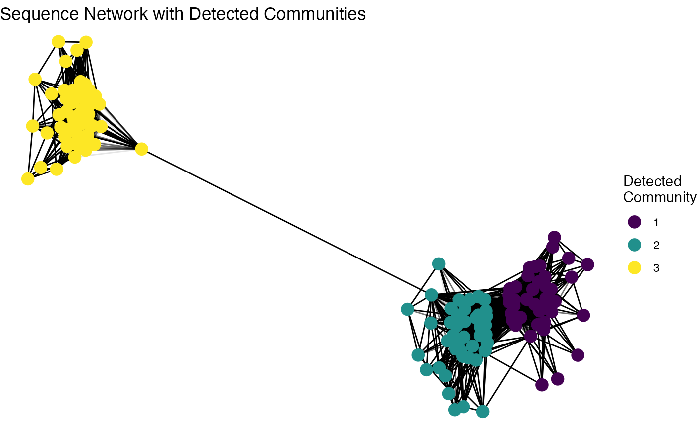

vignettes/articles/immApex.Rmd
immApex.RmdimmApex is meant to serve as an API for supervised and unsupervised learning tasks based on immune receptor sequencing. These functions extract or generate amino acid or nucleotide sequences and prepare them for downstream machine learning. immApex is the underlying structure for the BCR models in Ibex and TCR models in Trex. It should be noted that the tools here are created for immune receptor sequences; they will work more generally for nucleotide or amino acid sequences. The package itself supports AIRR, Adaptive, and 10x formats and interacts with the scRepertoire R package.
More information is available at the immApex GitHub Repo.
Depending on the sequencing technology and the version, we might want
to expand the length of our sequence embedding approach. The first step
in the process is pulling the reference sequences from the
ImMunoGeneTics (IMGT) system using getIMGT(). More
information for IMGT can be found at imgt.org. Data from IMGT is under a CC
BY-NC-ND 4.0 license. Please be aware that attribution is required for
usage and should not be used to create commercial or derivative
work.
Parameters for getIMGT()
Here, we will use the getIMGT() function to get the
amino acid sequences for the TRBV region to get all the sequences by V
gene allele.
TRBV_aa <- getIMGT(species = "human", chain = "TRB", frame = "inframe", region = "v", sequence.type = "aa")
TRBV_aa[[1]][1]## $`TRBV1*01`
## [1] "TRBVHPVREGIONAADTGITQTPKYLVTAMGSKRTMKREHLGHDSMYWYRQKAKKSLEFMFYYNCKEFIENKTVPNHFTPECPDSSRLYLHVVALQQEDSAAYLCTSSQ"Immune receptor nomenclature can be highly variable across sequencing
platforms. When preparing data for models, we can use
formatGenes() to universalize the gene formats into IMGT
nomenclature.
Parameters for formatGenes()
Here, we will use the built-in example from Adaptive Biotechnologies
and reformat and simplify the v region.
formatGenes() will add 2 columns to the end of the data
frame per region selected - 1) v_IMGT will be the
formatted gene calls and 2) v_IMGT.check is a binary
for if the formatted region appears in the IMGT database. In the example
below, “TRBV2-1” is not recognized as a designation within IMGT.
data("immapex_example.data")
Adaptive_example <- formatGenes(immapex_example.data[["Adaptive"]], region = "v", technology = "Adaptive",
simplify.format = TRUE)
head(Adaptive_example[, c("aminoAcid", "vGeneName", "v_IMGT", "v_IMGT.check")])## aminoAcid vGeneName v_IMGT v_IMGT.check
## 4490 CASSQDGPSGIETQYF TCRBV04-02 TRBV4-2 1
## 18266 CASSEGSNQPQHF TCRBV02-01 TRBV2-1 0
## 22061 CSASAGDMVTEAFF <NA> <NA> 0
## 22174 CASSQDPGETDTQYF <NA> <NA> 0
## 19117 CATSAWTGELFF <NA> <NA> 0
## 2659 CATSVPGQETQYF <NA> <NA> 0We can now use inferCDR() to add additional sequence
elements to our example data using the outputs of
formatGenes() and getIMGT(). Here, we will use
the function to isolate the complementarity-determining regions (CDR) 1
and 2. If the gene nomenclature does not match the IMGT the result will
be NA for the given sequences. Likewise, if the IMGT nomenclature has
been simplified, the first allelic match will be used for sequence
extraction.
Parameters for inferCDR
getIMGT()
Adaptive_example <- inferCDR(Adaptive_example, chain = "TRB", reference = TRBV_aa, technology = "Adaptive",
sequence.type = "aa", sequences = c("CDR1", "CDR2"))
Adaptive_example[200:210, c("CDR1_IMGT", "CDR2_IMGT")]## CDR1_IMGT CDR2_IMGT
## 27450 <NA> <NA>
## 14624 <NA> <NA>
## 10452 <NA> <NA>
## 31207 IIEKRQSVAFWC QGPKLLIQFQ
## 23216 IKTRGQQVTLSC QGLQFLFEYF
## 3356 VMGMTNKKSLKC KPPELMFVYS
## 25030 <NA> <NA>
## 1889 VMGMTNKKSLKC KPLELMFVYN
## 31150 VTEKGKDVELRC QGLEFLIYFQ
## 20759 <NA> <NA>
## 13865 VMGMTNKKSLKC KPPELMFVYSGenerating synthetic sequences is a quick way to start testing the
model code. generateSequences() can also generate realistic
noise for generative adversarial networks.
Parameters for generateSequences()
sequences <- generateSequences(prefix.motif = "CAS", suffix.motif = "YF", number.of.sequences = 1000,
min.length = 8, max.length = 16)
sequences <- unique(sequences)
head(sequences)## [1] "CASHMCYF" "CASKDINEQTYF" "CASVIVYF" "CASKVNWNPKPNVQYF"
## [5] "CASIQLAINYF" "CASMCISYF"If we want to generate nucleotide sequences instead of amino acids, we must to change the sequence.dictionary.
nucleotide.sequences <- generateSequences(number.of.sequences = 1000, min.length = 8, max.length = 16,
sequence.dictionary = c("A", "C", "T", "G"))
head(nucleotide.sequences)## [1] "TCGTGAAC" "ATGCGAAC" "CCGTGCCACGGGTCAA" "AAGAACGGATAGATT"
## [5] "CTAGCCTGGCG" "ACGCCGACAT"A common approach is to mutate sequences randomly or at specific
intervals. This can be particularly helpful if we have fewer sequences
or want to test a model for accuracy given new, altered sequences.
mutateSequences() allows us to tune the type of mutation,
where along the sequences to introduce the mutation and the overall
number of mutations.
Parameters for mutateSequences()
mutated.sequences <- mutateSequences(sequences, number.of.sequences = 1, position.start = 3, position.end = 8)
head(sequences)## [1] "CASHMCYF" "CASKDINEQTYF" "CASVIVYF" "CASKVNWNPKPNVQYF"
## [5] "CASIQLAINYF" "CASMCISYF"
head(mutated.sequences)## CASHMCYF CASKDINEQTYF CASVIVYF CASKVNWNPKPNVQYF
## "CASNMCYF" "CASKDFNEQTYF" "CASVIVYT" "CASSVNWNPKPNVQYF"
## CASIQLAINYF CASMCISYF
## "CASIQMAINYF" "CASACISYF"Beyond encoding single sequences, immApex provides functions to calculate summary statistics and features across a collection of sequences, such as a clonal repertoire.
This function calculates the relative frequency of each residue at each position across a set of sequences.
Parameters for calculateFrequency()
freq.matrix <- calculateFrequency(sequences, max.length = 20)
head(freq.matrix[, 1:10])## Pos.1 Pos.2 Pos.3 Pos.4 Pos.5 Pos.6 Pos.7 Pos.8
## A 0 1 0 0.05210421 0.04308617 0.05210421 0.03807615 0.03106212
## R 0 0 0 0.04208417 0.06412826 0.06012024 0.03707415 0.03306613
## N 0 0 0 0.03907816 0.04208417 0.05911824 0.04809619 0.03306613
## D 0 0 0 0.04809619 0.05210421 0.05611222 0.04208417 0.03306613
## C 1 0 0 0.05010020 0.05410822 0.04609218 0.04008016 0.03807615
## Q 0 0 0 0.04108216 0.05811623 0.05811623 0.04308617 0.02905812
## Pos.9 Pos.10
## A 0.03306613 0.02605210
## R 0.03006012 0.02805611
## N 0.03206413 0.02404810
## D 0.03807615 0.02204409
## C 0.02905812 0.02805611
## Q 0.02304609 0.01903808This function measures the diversity (or entropy) at each position in a set of aligned sequences. It can use several common diversity metrics.
Parameters for calculateEntropy()
shannon.entropy <- calculateEntropy(sequences, method = "shannon")
head(shannon.entropy)## Pos1 Pos2 Pos3 Pos4 Pos5 Pos6
## 0.000000 0.000000 0.000000 2.986591 2.984538 2.985312This function computes position-wise summary statistics for amino acid properties. For each position, it calculates a metric (like the mean) of a specific physicochemical property for all residues found at that position.
Parameters for calculateProperty()
# Calculate the mean of Atchley factors at each position
atchley.profile <- calculateProperty(sequences, property.set = "atchleyFactors", summary.fun = "mean")
head(atchley.profile[, 1:6])## position
## scale Pos.1 Pos.2 Pos.3 Pos.4 Pos.5 Pos.6
## AF1 -1.343 -0.591 -0.228 -0.04847395 0.06555010 0.03563226
## AF2 0.465 -1.302 1.399 -0.04388978 -0.05410321 -0.04387976
## AF3 -0.862 -0.733 -4.760 -0.02414930 0.06490982 -0.09043687
## AF4 -1.020 1.570 0.670 0.02724349 -0.02970441 -0.02113026
## AF5 -0.255 -0.146 -2.647 -0.02846994 0.06192184 -0.03162625This function quantifies the usage of gene loci (e.g., V and J genes) within a repertoire.
Parameters for calculateGeneUsage() *
loci: A character vector of one or two column names
corresponding to the gene loci. * summary: The output
format: “proportion” (default), “count”, or “percent”.
# Using the built-in AIRR data
data_airr <- immapex_example.data[["AIRR"]]
# Calculate paired V-J gene usage as percentages
vj_usage <- calculateGeneUsage(data_airr, loci = c("v_call", "j_call"), summary = "percent")
vj_usage[1:5, 1:5]## y
## x TRAJ10*01 TRAJ11*01 TRAJ12*01 TRAJ13*01 TRAJ13*02
## TRAV1-1*01 0.00000000 0.00000000 0.00000000 0.00000000 0.00000000
## TRAV1-1*02 0.00000000 0.00000000 0.00000000 0.00000000 0.00000000
## TRAV1-2*01 0.00000000 0.01666667 0.00000000 0.00000000 0.00000000
## TRAV1-2*03 0.01666667 0.00000000 0.03333333 0.00000000 0.01666667
## TRAV10*01 0.08333333 0.00000000 0.00000000 0.00000000 0.00000000This function rapidly finds and counts contiguous (or gapped) amino acid or nucleotide motifs of specified lengths across a set of sequences.
Parameters for calculateMotif()
motif.counts <- calculateMotif(sequences, motif.lengths = 3, min.depth = 5)
head(motif.counts)## motif frequency
## 1 SYF 52
## 2 LQY 5
## 3 SAT 6
## 4 STH 5
## 5 SQI 5
## 6 HNY 6This function calculates a positional probability matrix (PPM) for a group of sequences. This can be used to represent the sequence profile of an antigen-specific repertoire or to generate a sequence logo.
ppm.matrix <- probabilityMatrix(sequences)
head(ppm.matrix)## Pos.1 Pos.2 Pos.3 Pos.4 Pos.5 Pos.6 Pos.7 Pos.8
## A 0 1 0 0.05210421 0.04308617 0.05210421 0.03807615 0.03106212
## R 0 0 0 0.04208417 0.06412826 0.06012024 0.03707415 0.03306613
## N 0 0 0 0.03907816 0.04208417 0.05911824 0.04809619 0.03306613
## D 0 0 0 0.04809619 0.05210421 0.05611222 0.04208417 0.03306613
## C 1 0 0 0.05010020 0.05410822 0.04609218 0.04008016 0.03807615
## Q 0 0 0 0.04108216 0.05811623 0.05811623 0.04308617 0.02905812
## Pos.9 Pos.10 Pos.11 Pos.12 Pos.13 Pos.14 Pos.15
## A 0.03780069 0.03439153 0.0312500 0.02592593 0.02347418 0.01242236 0
## R 0.03436426 0.03703704 0.0312500 0.03333333 0.01643192 0.01552795 0
## N 0.03665521 0.03174603 0.0359375 0.03148148 0.03521127 0.00931677 0
## D 0.04352806 0.02910053 0.0375000 0.04259259 0.01877934 0.00621118 0
## C 0.03321879 0.03703704 0.0328125 0.02407407 0.03755869 0.02795031 0
## Q 0.02634593 0.02513228 0.0203125 0.03888889 0.02816901 0.01242236 0
## Pos.16
## A 0
## R 0
## N 0
## D 0
## C 0
## Q 0The PPM can also be converted to a positional weight matrix (PWM) using a log-likelihood ratio.
set.seed(42)
# Generate a sample background frequency
back.freq <- sample(1:1000, 20)
names(back.freq) <- amino.acids
back.freq <- back.freq/sum(back.freq)
pwm.matrix <- probabilityMatrix(sequences, max.length = 20, convert.PWM = TRUE, background.frequencies = back.freq)
head(pwm.matrix)## Pos.1 Pos.2 Pos.3 Pos.4 Pos.5 Pos.6 Pos.7
## A -6.153093 3.811248 -6.153093 -0.42517268 -0.6936615 -0.4251727 -0.8676909
## R -6.982686 -6.982686 -6.982686 -1.55642111 -0.9603181 -1.0519485 -1.7347584
## N -5.347666 -5.347666 -5.347666 -0.02573756 0.0785991 0.5592249 0.2670442
## D -4.278624 -4.278624 -4.278624 1.33608583 1.4492964 1.5542660 1.1476407
## C 6.733651 -3.230690 -3.230690 2.44173581 2.5506702 2.3238993 2.1268625
## Q -4.854126 -4.854126 -4.854126 0.53819124 1.0285169 1.0285169 0.6053054
## Pos.8 Pos.9 Pos.10 Pos.11 Pos.12 Pos.13
## A -1.15309313 -0.8766248 -1.0065966 -1.1355761 -1.3839637 -1.50303956
## R -1.89522302 -1.8394841 -1.7330959 -1.9651688 -1.8725195 -2.79206392
## N -0.26020282 -0.1142661 -0.3122005 -0.1375035 -0.3155018 -0.15704371
## D 0.80883883 1.1957837 0.6365469 0.9904318 1.1685773 0.08192294
## C 2.05471268 1.8652065 2.0189005 1.8539417 1.4389042 2.04739525
## Q 0.05276441 -0.0801582 -0.1405891 -0.4215716 0.4675443 0.03693548
## Pos.14 Pos.15 Pos.16 Pos.17 Pos.18 Pos.19 Pos.20
## A -2.2574957 -4.080435 -3.1615713 -0.4834994 -0.4834994 -0.4834994 -0.4834994
## R -2.8240540 -4.910027 -3.9911640 -1.3130921 -1.3130921 -1.3130921 -1.3130921
## N -1.7739963 -3.275007 -2.3561438 0.3219281 0.3219281 0.3219281 0.3219281
## D -1.1199922 -2.205965 -1.2871022 1.3909697 1.3909697 1.3909697 1.3909697
## C 1.6649079 -1.158031 -0.2391677 2.4389042 2.4389042 2.4389042 2.4389042
## Q -0.9585288 -2.781468 -1.8626043 0.8154676 0.8154676 0.8154676 0.8154676These functions help analyze relationships between residues or whole sequences.
adjacencyMatrix() summarizes transitions between
adjacent residues, creating a matrix of co-occurrence counts.
adj.matrix <- adjacencyMatrix(sequences, normalize = FALSE)
adj.matrix[1:10, 1:10]## A R N D C Q E G H I
## A 20 28 38 26 1023 28 24 28 32 24
## R 28 22 41 33 27 34 33 27 30 34
## N 38 41 16 14 21 31 23 31 33 29
## D 26 33 14 38 35 18 30 24 32 35
## C 1023 27 21 35 24 28 30 30 27 34
## Q 28 34 31 18 28 20 28 27 20 31
## E 24 33 23 30 30 28 28 28 23 32
## G 28 27 31 24 30 27 28 36 25 35
## H 32 30 33 32 27 20 23 25 28 28
## I 24 34 29 35 34 31 32 35 28 42buildNetwork() constructs a similarity network where
nodes are sequences and edges connect sequences with an edit distance
below a given threshold.
# Building an edge list
g1 <- buildNetwork(data.frame(sequences = sequences), seq_col = "sequences", threshold = 2)
# Forming network
graph <- graph_from_edgelist(as.matrix(g1[, 1:2]))
E(graph)$weight <- g1[, 3]
# Remove isolated nodes for clearer visualization
graph <- delete_vertices(graph, which(degree(graph) == 0))
# Convert to tidygraph for use with ggraph
g_tidy <- as_tbl_graph(graph)
# Plot the network
ggraph(g_tidy, layout = "fr") + geom_edge_link(aes(width = weight), color = "black", alpha = 0.5) +
geom_node_point(aes(size = degree(g_tidy, mode = "all")), fill = "steelblue", color = "black",
shape = 21) + theme_void() + scale_edge_width(range = c(0.1, 0.5)) + labs(size = "Degree") +
theme(legend.position = "right")
The primary tool for converting biological sequences into a numerical
format suitable for machine learning is the
sequenceEncoder() function. It is a versatile wrapper that
can generate three different types of numerical representations,
controlled by the mode argument. Understanding this function is key to
using the package effectively.
Key Arguments:
"onehot",
"property", or "geometric".One-hot encoding is a common method that transforms each amino acid
at each position into a binary vector. This is useful when the specific
identity and position of each residue are important. This functionality
is accessed by setting mode = "onehot" in
sequenceEncoder() or by using the
onehotEncoder() alias.
Mode-Specific Arguments:
# Generate one-hot encoding using the main function
enc_onehot <- sequenceEncoder(sequences, mode = "onehot", verbose = FALSE)
# You can achieve the same result with the alias
enc_onehot_alias <- onehotEncoder(sequences, verbose = FALSE)
# View the first few columns of the flattened matrix output
head(enc_onehot$flattened[, 1:10])## A_1 R_1 N_1 D_1 C_1 Q_1 E_1 G_1 H_1 I_1
## [1,] 0 0 0 0 1 0 0 0 0 0
## [2,] 0 0 0 0 1 0 0 0 0 0
## [3,] 0 0 0 0 1 0 0 0 0 0
## [4,] 0 0 0 0 1 0 0 0 0 0
## [5,] 0 0 0 0 1 0 0 0 0 0
## [6,] 0 0 0 0 1 0 0 0 0 0Instead of a binary vector, this method represents each amino acid
using a set of continuous numerical values based on physicochemical
properties (e.g., kideraFactors, FASGAI, etc). This can capture the
biochemical similarity between amino acids. Access this method by
setting mode = "property" or using the
propertyEncoder() alias.
Mode-Specific Arguments:
Available property.set options include:
# Generate property-based encoding using FASGAI factors
enc_prop <- sequenceEncoder(sequences, mode = "property", property.set = "FASGAI", verbose = FALSE)
# The propertyEncoder() alias is a convenient shortcut
enc_prop_alias <- propertyEncoder(sequences, property.set = "FASGAI", verbose = FALSE)
# View the first few columns of the flattened property matrix
head(enc_prop$flattened[, 1:6])## F1_1 F2_1 F3_1 F4_1 F5_1 F6_1
## [1,] 0.997 0.021 -1.419 -2.08 -0.799 0.502
## [2,] 0.997 0.021 -1.419 -2.08 -0.799 0.502
## [3,] 0.997 0.021 -1.419 -2.08 -0.799 0.502
## [4,] 0.997 0.021 -1.419 -2.08 -0.799 0.502
## [5,] 0.997 0.021 -1.419 -2.08 -0.799 0.502
## [6,] 0.997 0.021 -1.419 -2.08 -0.799 0.502This approach creates a single, fixed-length vector (an “embedding”)
for an entire sequence. It works by averaging the vectors for each amino
acid from a substitution matrix (like BLOSUM62) and then applying a
geometric rotation. This is useful for tasks where a summary of the
entire sequence is needed, similar to approaches like GIANA. Use this
with mode = "geometric" or the
geometricEncoder() alias.
Parameters for geometricEncoder()
# Generate a geometric embedding for each sequence
enc_geo <- sequenceEncoder(sequences, mode = "geometric", method = "BLOSUM62", theta = pi/3, verbose = FALSE)
# The alias provides a direct path to this functionality
enc_geo_alias <- geometricEncoder(sequences, method = "BLOSUM62", theta = pi/3, verbose = FALSE)
# The output is a single summary matrix where each row is a sequence
head(enc_geo$summary)## [,1] [,2] [,3] [,4] [,5] [,6] [,7]
## 1 -1.640544 -0.65849365 -2.7610572 0.28229128 -0.6282849 -1.6617786 -2.840304
## 2 -1.229861 -0.03648518 -0.7135148 0.06917725 -0.8720085 0.8436963 -1.754380
## 3 -2.056810 -1.18750000 -3.2900635 0.69855716 -1.5612976 -1.0457532 -3.119310
## 4 -1.380529 0.14114564 -1.3470349 -0.41686706 -1.2371393 1.0177881 -1.930168
## 5 -1.462587 -0.73945224 -2.3684144 0.10221415 -1.1720277 -0.1518066 -2.628962
## 6 -1.732051 -1.00000000 -2.8133898 0.42848961 -0.7915951 -1.7400282 -2.883831
## [,8] [,9] [,10] [,11] [,12] [,13]
## 1 0.66955081 -0.9910254 -0.28349365 -1.953044 -0.1172278 -0.12500000
## 2 -0.62799153 -1.6852027 0.08552329 -1.255181 1.0073714 -1.51036297
## 3 0.65280398 -0.3337341 1.82804446 -1.794551 -0.8917468 0.04575318
## 4 -0.03185118 -1.9072913 0.05352540 -1.191386 1.1885413 -1.76778811
## 5 0.37167793 -0.8392773 1.09003464 -1.474767 -0.5365385 -0.53001155
## 6 0.77272030 -1.0664529 1.18048396 -1.761823 -0.5039887 -0.09622504
## [,14] [,15] [,16] [,17] [,18] [,19] [,20]
## 1 0.216506351 -1.5122595 1.8693103 -1.582532 0.2410254 -0.6785254 -0.82475953
## 2 0.282692070 -0.9166667 1.5877132 -2.043055 -0.7946582 -1.3853630 0.06618572
## 3 0.170753175 -1.8370191 1.6818103 -1.828044 -0.3337341 0.7120191 0.26674682
## 4 0.061898816 -0.7935095 0.6243988 -1.859294 -0.2796075 -1.4346552 0.10989564
## 5 0.008916019 -1.4512820 1.7864214 -2.095687 -0.3701633 -0.4180069 0.17855469
## 6 -0.055555556 -1.1666667 2.0207259 -1.680484 -0.2004275 -0.4960113 -0.02977213Another approach to transforming a sequence into numerical values is tokenizing it into numbers. This is a common approach for recurrent neural networks where one letter corresponds to a single integer. In addition, we can add start and stop tokens to our original sequences to differentiate between the beginning and end of the sequences.
Parameters for tokenizeSequences()
token.matrix <- tokenizeSequences(input.sequences = c(sequences, mutated.sequences), add.startstop = TRUE,
start.token = "!", stop.token = "^", convert.to.matrix = TRUE)
head(token.matrix[, 1:18])## [,1] [,2] [,3] [,4] [,5] [,6] [,7] [,8] [,9] [,10] [,11] [,12] [,13] [,14]
## [1,] 1 6 2 17 10 14 6 20 15 22 23 23 23 23
## [2,] 1 6 2 17 13 5 11 4 8 7 18 20 15 22
## [3,] 1 6 2 17 21 11 21 20 15 22 23 23 23 23
## [4,] 1 6 2 17 13 21 4 19 4 16 13 16 4 21
## [5,] 1 6 2 17 11 7 12 2 11 4 20 15 22 23
## [6,] 1 6 2 17 14 6 11 17 20 15 22 23 23 23
## [,15] [,16] [,17] [,18]
## [1,] 23 23 23 23
## [2,] 23 23 23 23
## [3,] 23 23 23 23
## [4,] 7 20 15 22
## [5,] 23 23 23 23
## [6,] 23 23 23 23We have a function called sequenceDecoder() that
extracts sequences from one-hot or property-encoded matrices or arrays.
This function can be applied to any generative approach to sequence
generation.
Parameters for sequenceDecoder()
"onehot" or "property"
mode = "property", a
character vector of property names (e.g., "Atchley") that
were used for the original encoding.
property.matrix <- propertyEncoder(input.sequences = c(sequences, mutated.sequences), property.set = "FASGAI")
property.sequences <- sequenceDecoder(property.matrix[[1]], mode = "property", property.set = "FASGAI",
call.threshold = 1)
head(sequences)## [1] "CASHMCYF" "CASKDINEQTYF" "CASVIVYF" "CASKVNWNPKPNVQYF"
## [5] "CASIQLAINYF" "CASMCISYF"
head(property.sequences)##
## "CASHMCYF" "CASKDINEQTYF" "CASVIVYF" "CASKVNWNPKPNVQYF"
##
## "CASIQLAINYF" "CASMCISYF"A similar approach can be applied when using matrices or arrays derived from one-hot encoding:
sequence.matrix <- onehotEncoder(input.sequences = c(sequences, mutated.sequences))
OHE.sequences <- sequenceDecoder(sequence.matrix,
mode= "onehot")
head(OHE.sequences)## [1] "CASHMCYF" "CASKDINEQTYF" "CASVIVYF" "CASKVNWNPKPNVQYF"
## [5] "CASIQLAINYF" "CASMCISYF"A common task is to classify sequences into groups, such as predicting whether an immune receptor binds to a specific antigen. Here, we’ll train a Random Forest model to distinguish between two classes of sequences based on their physicochemical properties
Step 1: Simulate Data and Engineer Features
First, we’ll simulate two distinct classes of sequences using
generateSequences(). We’ll then use
propertyEncoder() with the “atchleyFactors” to convert each
sequence into a flattened numerical vector. Each element in the vector
represents a specific physicochemical property at a specific position,
transforming our variable-length sequences into a fixed-size feature
matrix suitable for machine learning.
# Step 1a: Generate two distinct classes of sequences
class1.sequences <- generateSequences(prefix.motif = "CAS", min.length = 3, number.of.sequences = 500)
class2.sequences <- generateSequences(prefix.motif = "CSG", min.length = 3, number.of.sequences = 500)
# Combine sequences and create labels
all.sequences <- c(class1.sequences, class2.sequences)
labels <- as.factor(c(rep("Class1", 500), rep("Class2", 500)))
# Step 1b: Use propertyEncoder to create a feature matrix from Atchley factors
feature.matrix <- propertyEncoder(all.sequences, property.set = "atchleyFactors", verbose = FALSE)
# Combine the flattened feature matrix and labels into the final data frame
training.data <- data.frame(feature.matrix$flattened, labels)Step 2: Train and Evaluate the Model
Now we can train the Random Forest classifier. This model is robust, requires minimal tuning, and can provide insights into which features (in this case, which property at which position) are most important for distinguishing between the classes.
suppressMessages(library(randomForest))
# Train the Random Forest model
set.seed(42) # for reproducibility
rf.model <- randomForest(labels ~ ., data = training.data, ntree = 100, importance = TRUE) # Set importance=TRUE to calculate scores
# Print the confusion matrix to see model performance
print(rf.model)##
## Call:
## randomForest(formula = labels ~ ., data = training.data, ntree = 100, importance = TRUE)
## Type of random forest: classification
## Number of trees: 100
## No. of variables tried at each split: 7
##
## OOB estimate of error rate: 0%
## Confusion matrix:
## Class1 Class2 class.error
## Class1 500 0 0
## Class2 0 500 0A key advantage of Random Forest is the ability to easily extract feature importance. We can create a plot to see which positional Atchley factors were most influential in the model’s predictions.
# Extract feature importance data from the model
importance.data <- as.data.frame(importance(rf.model))
importance.data$Feature <- rownames(importance.data)
# Get the top 15 most important features
top_features <- importance.data[order(importance.data$MeanDecreaseGini, decreasing = TRUE), ][1:15,
]
# Plot using ggplot2
ggplot(top_features, aes(x = MeanDecreaseGini, y = reorder(Feature, MeanDecreaseGini))) + geom_col(aes(fill = MeanDecreaseGini)) +
scale_fill_viridis_c() + labs(title = "Top 15 Most Important Features", x = "Mean Decrease in Gini Impurity",
y = "Feature (Property and Position)") + theme_classic() + theme(legend.position = "none")
The plot shows the features that the model found most useful for
classification. The feature names correspond to specific Atchley factors
at specific positions within the sequence - here residues 2 and 3 where
the difference was encoded - demonstrating how
propertyEncoder() allows the model to learn from the
underlying biochemistry.
Sometimes we don’t have labels, but we want to see if our sequences
form natural clusters. We can use dimensionality reduction techniques
like Principal Component Analysis (PCA) to visualize the relationships
between sequences. The geometricEncoder() function is
perfect for this, as it creates a rich, fixed-length numerical embedding
for each sequence.
Step 1: Simulate and Encode a Mixed Population of Sequences
We’ll generate three distinct families of sequences. Then, we will
use geometricEncoder() to transform them into a
20-dimensional numerical matrix.
# Generate three distinct groups of sequences
groupA <- generateSequences(prefix.motif = "CA", number.of.sequences = 100, min.length = 2)
groupB <- generateSequences(prefix.motif = "QR", number.of.sequences = 100, min.length = 2)
groupC <- generateSequences(prefix.motif = "YY", number.of.sequences = 100, min.length = 2)
# Combine them and create a vector of original group IDs for later visualization
mixed.sequences <- c(groupA, groupB, groupC)
original.groups <- as.factor(rep(c("Group A", "Group B", "Group C"), each = 100))
# Use geometricEncoder to create embeddings
geometric.embeddings <- geometricEncoder(mixed.sequences, method = "BLOSUM62", verbose = FALSE)Step 2: Perform PCA and Visualize Clusters
With our geometric.embeddings matrix, we can now perform PCA and plot the results. If the geometric encoding captures the underlying differences in our sequence families, we should see distinct clusters in the plot of the first two principal components.
# Perform PCA on the embedding matrix
pca.result <- prcomp(geometric.embeddings$summary, center = TRUE, scale. = TRUE)
# Prepare data for plotting with ggplot2
pca.data <- data.frame(PC1 = pca.result$x[, 1], PC2 = pca.result$x[, 2], Group = original.groups)
# Plot PC1 vs PC2 using ggplot2 and viridis
ggplot(pca.data, aes(x = PC1, y = PC2, color = Group)) + geom_point(size = 3, alpha = 0.8) + scale_color_viridis(discrete = TRUE) +
labs(title = "PCA of Geometric Sequence Embeddings", x = "Principal Component 1", y = "Principal Component 2") +
theme_classic()
The resulting plot clearly shows three distinct clusters,
demonstrating that the geometricEncoder() successfully
captured the structural differences between our sequence families,
allowing for their separation in an unsupervised manner.
Beyond analyzing individual sequences, we can explore the relationships between sequences by building a similarity network. A powerful machine learning application for these networks is community detection, an unsupervised clustering method that finds groups of densely connected nodes. In immunology, this can be used to identify clonal families or groups of sequences with shared features.
Step 1: Simulate Data with Inherent Structure
First, we will simulate a dataset containing three distinct “families” of sequences. Our goal is to see if the network analysis can blindly recover these groups without being given the labels.
set.seed(42)
# Generate three distinct groups of sequences to simulate clonal families
family1 <- unique(generateSequences(prefix.motif = "CASS", suffix.motif = "YF", min.length = 6,
number.of.sequences = 60))
family2 <- unique(generateSequences(prefix.motif = "CARS", suffix.motif = "GF", min.length = 6,
number.of.sequences = 60))
family3 <- unique(generateSequences(prefix.motif = "CSVA", suffix.motif = "HF", min.length = 6,
number.of.sequences = 60))
# Combine into a single data frame
all_sequences_df <- data.frame(sequence = c(family1, family2, family3), original_family = c(rep("Family 1",
42), rep("Family 2", 40), rep("Family 3", 46)))Step 2: Build the Sequence Network
Next, we use buildNetwork() to create an edge list based
on sequence similarity (edit distance). We then convert this list into a
formal graph object using the igraph package, which is the standard for
network analysis in R.
# Build the edge list: connect sequences with an edit distance of 3 or less
edge_list <- buildNetwork(all_sequences_df, seq_col = "sequence", threshold = 3)
# Replace numerical edge list with the sequences
edge_list_sequences <- as.matrix(data.frame(from = all_sequences_df$sequence[as.numeric(edge_list$from)],
to = all_sequences_df$sequence[as.numeric(edge_list$to)], dist = edge_list$dist))
# Create a graph object from the edge list and node data This graph now contains all our
# sequences as nodes
sequence_graph <- graph_from_data_frame(d = edge_list_sequences, vertices = all_sequences_df, directed = FALSE)
E(sequence_graph)$weight <- edge_list_sequences[, 3]Step 3: Perform Community Detection
Now we apply a machine learning algorithm to find communities. The
igraph package offers many algorithms; we will use
“Walktrap,” a method that finds communities through a series of short
random walks. The idea is that walks are more likely to get “trapped”
within densely connected parts of the network (i.e., communities).
# Perform community detection using the Walktrap algorithm
communities <- cluster_walktrap(sequence_graph)
# Add the community membership as an attribute to the graph nodes
V(sequence_graph)$community <- communities$membershipStep 4: Visualize and Interpret the Communities
Finally, we use ggraph to visualize the network,
coloring each node by the community it was assigned to by the algorithm.
If the analysis was successful, the colors should align with the
original sequence families we simulated.
# Convert to tidygraph for use with ggraph
g_tidy <- as_tbl_graph(sequence_graph)
# Plot the network, coloring nodes by their detected community
ggraph(g_tidy, layout = "fr") + geom_edge_link(aes(alpha = weight), show.legend = FALSE) + geom_node_point(aes(color = as.factor(community)),
size = 4) + scale_color_viridis(discrete = TRUE, option = "D") + labs(title = "Sequence Network with Detected Communities",
color = "Detected\nCommunity") + theme_void()
The plot clearly visualizes the network structure, and the distinct color groups demonstrate that the community detection algorithm successfully identified and separated the three original sequence families without any prior information. This unsupervised approach is a powerful tool for exploring the hidden structure within a complex repertoire.